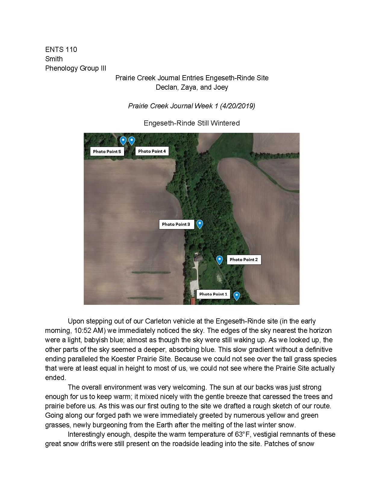

第 13 章
多线作战的隐性成本
哥伦比亚影业的发行排期表上，一部把三个版本蜘蛛侠放进同一个叙事空间的电影还在处理补拍与宣传节奏。托比·马奎尔、安德鲁·加菲尔德与汤姆·霍兰德各自背负的观众记忆不同，反派线索不同，制

蜘蛛侠：英雄无归片场工作照
图源：维基共享资源 · Ramirez, Declan R.; Silknitter, Joseph; Vijil, Zaya · CC BY 4.0
片方需要协调的宣发资源也不同。《蜘蛛侠：英雄无归》原定2021年7月16日在美国上映，后来因疫情与制作安排一再推迟，最终落定当年12月17日。
这个日期本身即是多元宇宙项目反复修改后的产物。当后期团队还在为不同角色的出场时长与视觉风格争论时，中国饮料渠道里，另一种“多重宇宙”正被强行排进同一台冰柜。元气森林在2020年确立的多品类扩张，表面上绕开了传统定位理论对单一品类聚焦的要求。互联网世界常用的赛马机制被整体搬进快消行业：多条产品线同时推进，谁能用数据证明动销更快、复购更高，谁就获得下一轮预算。
气泡水、燃茶、外星人电解质水，三条线平行进入市场。它们各有品牌名，各有独立包装，各有目标消费场景。理论上，它们不会互相冲突。
气泡水占据零糖零卡气泡饮料，燃茶锁定无糖茶饮，外星人打运动补水。三张心智地图没有重叠边界。
问题在于，饮料市场的分销末端不是云端。服务器可以按需扩容，广告预算可以实时竞价，但便利店冰柜的搁板按层计算，经销商仓库按立方米计算，销售人员每日可拜访门店数存在硬上限。灌装线换型需要清洗与调试，冷链车单次配送的品种越多，单店卸货时间越长，回程空载风险越高。这些变量不进入产品经理的数据评审表，但它们会在每一家门店的排面争夺中显形。
2021年春季，一份经销商工单在业内流传。工单来自华东某省会城市，经销商的仓库同时堆放着气泡水、燃茶和外星人电解质水。三种产品各有一份铺货指标，总部下发时间集中在同一周。
气泡水指标要求维持既有门店覆盖并提升单店动销，燃茶指标要求进入新的便利店系统并抢占茶饮冰柜黄金位置，外星人电解质水指标要求在运动场景渠道实现从零到一的突破。
三份工单互相独立，各自标注考核权重与奖惩条件，但没有一份说明：如果同一家门店的冰柜空间不够，应该优先保哪一个。区域销售经理的答复没有留下文字记录，但多位经销商后来复述时用了同一个意思：指标是总部下来的，先把货铺上，看哪个卖得好再说。
“先都铺上”在办公室里只是一句执行口令，落到饮料零售末端，却是一次对物理承载能力的集体透支。一家八十平方米左右的连锁便利店，冰柜门数通常在八到十二门。碳酸饮料、茶饮料、功能饮料、果汁、包装水各自占据固定板块，板块边界由历史销售数据与品牌方陈列费共同决定。冰柜黄金层是视线平齐的第二至第四层，动销率最高。品牌方若想长期占住黄金层，需要持续支付陈列费，并向门店采购证明单品周转速度足够快。
黄金层不是无限资源。当元气森林要求气泡水、燃茶和电解质水同时进入黄金层，它实际是在要求经销商运营的同一物理空间内，用自家产品去挤占自家产品的排面。气泡水在2021年第二季度被迫让渡出部分黄金排面。
原本稳定的四到五个面位被压缩，腾出的空间交给外星人电解质水。燃茶的排面则下移到冰柜底层或侧门。侧门温度偏高，动销率通常只有黄金层的三分之一甚至更低。外星人电解质水在部分运动场景门店获得不错的初始动销，但在普通便利店，被让渡出来的黄金排面没有形成等值回报。于是冰柜里出现了一种相互消耗的陈列结构：气泡水因排面减少而损失销售额，电解质水因场景错配而消化不了新增排面，燃茶则被挤到边缘，等待下一次数据评审决定去留。
这个局面无法通过增加冰柜门数迅速解决。一家便利店是否新增冰柜，由门店租金、电费、采购预算和品类管理策略决定。品牌方可以支付一台冰柜的购置费用，但无法改变门店有限的坪效空间。即便元气森林愿意为经销商和门店提供更多冷链设备，实际能够投放的冰柜数量仍受制于门店后场面积与电力负荷。互联网产品的“加服务器”动作，在这里变成了“再买一台冰柜”，但冰柜不是服务器，它需要占据零售现场的真实面积。更大的摩擦出现在经销商车队。
饮料经销商的利润模型建立在装车率、送货半径和回程空载率三个变量之上。单车装载的品类越集中，同一门店的卸货量越大，单位配送成本越低。一个经销商同时配送气泡水、燃茶和电解质水时，需要维护的库存单位数量成倍增加，司机要在不同仓位间翻找货物，门店收货时间被拉长。原本一天可以覆盖四十家门店的线路，多品类并行后可能降到三十家。饮料经销净利率通常波动在三到五个百分点之间，配送成本每上升一个百分点，利润就会被吃掉一大块。
2021年5月，一位华东经销商做了一次内部测算。当月元气森林产品总销售额同比增长约百分之十八，配送成本上升约百分之二十七，仓储占用增加近四成，净利润同比降了两个多百分点。
增长没有消失，但增长带来的利润被多品类并行产生的隐性成本吞掉了。
这个结果没有进入总部的赛马数据面板。数据面板看到的是总销售额增长、新品铺货率提升、部分场景动销曲线向上。
它看不到经销商为完成三份指标而在门店之间绕路送小批量货物的那台面包车。
华南、华中的经销商几乎在同一时期感受到类似压力。他们的反馈逐级向上，被区域销售经理归类为“执行问题”。赛马机制的底层假设很硬：如果一个品类没有跑出来，不是多品类并行本身有问题，而是这个品类的产品力不够，或者负责该品类的团队执行不到位。
渠道端摩擦被解释为地面部队没有跟上空军节奏。解决方案因此不是收缩战线，而是继续加强地面执行。销售团队在2021年夏季成为压力的集中承受点。
一个省级单元内部，气泡水、燃茶和电解质水通常由不同产品经理负责，他们向各自产品线汇报，而不是向区域销售负责人汇报。一线销售因此同时接到三条垂直指令：气泡水产品经理要求加大终端陈列投入，燃茶产品经理要求加速新渠道开拓，电解质水产品经理要求集中力量突破运动场景。三个目标单独看都合理，但落到同一群销售身上，只能变成资源置换。
最常见的操作是挪用。销售人员把气泡水的陈列费用拆出来，用于电解质水的进场谈判，因为电解质水的铺货截止时间更近。
然后拿燃茶的促销赠品去补偿门店店主，安抚因气泡水排面缩水而产生的不满。月底冲量时，再向经销商压一批气泡水库存，用经销商垫资填平销售报表缺口。这样一来，三份报表暂时都过得去。但代价被转嫁到下一次谈判：连锁便利店体系对陈列费有严格审计，擅自调整陈列位置会被记录为违约，在下一年度提高进场门槛或削减品牌整体陈列空间。这种信誉折损不会显示在当月数据上，却会在后续季度变成更高的进场成本和更弱的谈判地位。
燃茶的处境最为尴尬。它上市时间早于外星人电解质水，却始终没有复制气泡水的爆发曲线。在赛马机制下，“没有跑出正向数据”意味着资源可能被削减。
但无糖茶饮是饮料行业公认的长期赛道。农夫山泉的东方树叶从上市到放量经历了多年培育，才在消费趋势转向后迎来增长拐点。燃茶是否拥有同样的等待时间，取决于总部对长期赛道和即时数据之间的判断。这个判断在多品类赛马体系中始终悬而未决。
数据可以告诉团队单周动销率，却无法告诉团队，一个无糖茶品牌需要几年才能把消费者口味习惯养起来。
外星人电解质水的问题发生在另一个维度。2021年上半年，它在健身房、篮球馆、户外运动社群等特定渠道撕开缺口，单店产出在部分场馆表现突出。但运动场景整体渠道规模有限，且高度分散。中国健身房连锁化率长期偏低，大量运动场馆属于个体经营，单店采购量小，配送成本高，账期管理不稳定。外星人在运动场景积累的增长，难以抵消其在主流便利店系统因排面挤压而损失的销售机会。更麻烦的是，它在普通便利店与气泡水同柜陈列时，消费者往往分不清两种产品之间的优先级：一个说零糖零卡，一个说运动补水，心智区隔在货架前并不那样清晰。
2021年秋天的一次内部协调会上，问题公开化。会议原本讨论第四季度市场费用分配。气泡水产品经理出示终端排面监测数据：与第一季度相比，气泡水在全国主要便利店的均排面数下降约百分之二十二，同期农夫山泉苏打水与可口可乐气泡水品牌排面上升。
结论直截了当：气泡水的渠道阵地正在被内部资源抽血。外星人产品经理则拿出运动场景铺货率曲线：从接近零提升至约百分之三十五，且没有消耗大量渠道费用，团队依靠场景选择与地推效率完成。言下之意很明确——资源向增量倾斜，方符合公司赛马原则。
燃茶产品经理没有正面加入争论。他夹在两套逻辑中间：既不拥有气泡水的现金牛地位，也不像外星人那样刚刚在新场景里证明自己。
销售负责人没有在会议上出示数据。他留下一句话，后来被与会者以不同版本转述：产品经理们赛马，一线销售跑断腿。这句话之所以迅速在公司内流传，是因为它准确点出了多品类战略在组织末梢制造的张力：决策层假设组织资源能随品类扩张同步弹性扩展，执行层却面对刚性约束——一天只有二十四小时，一个冰柜只有若干层搁板，一个经销商的仓库只有那么大。
那次会议没有形成决议。市场费用分配方案被推迟，而后续会议因组织架构调整与销售旺季来临一再顺延。
表面原因是外部节奏，实际原因是赛马机制本身的逻辑并不鼓励自上而下的资源分配。它相信数据应该说了算，测试结果应该说了算，而不是会议上的争论说了算。但数据没有自动给出权重。气泡水排面下降，外星人动销上升，经销商库存周转拉长，新品铺货率提升，销售拜访效率下降。不同指标指向不同方向，每一个都有事实支撑，但没有一个能单独回答：今天应该先救哪一个。
这个困境指向一个更深的约束。互联网产品开发中，供给侧弹性极大。服务器带宽可以在数小时内扩容，研发团队可以在一个月内扩张，用户规模可以在一个季度内增长一个数量级。真正的瓶颈在需求侧：能不能获客，能不能留存，能不能变现。
快消行业相反。中国饮料市场需求侧弹性不小，消费者接受新品的速度在加快。真正卡住增长的往往是供给侧：灌装线扩建需要六到十二个月，便利店冰柜陈列受制于门店物理空间，经销商网络铺设需要数年积累。这些约束不会因为某款产品在数据测试中跑出漂亮曲线就自动软化。
元气森林在2020至2021年的多品类扩张，本质上是用一个互联网速度的需求侧引擎，去拉动一个传统速度的供给侧车身。引擎转速越高，连接件承受的扭矩越大。最先出现裂纹的往往不是引擎本身，而是引擎与车轮之间的部件：经销商、销售团队、终端门店采购。
到2021年底，部分经销商开始私下降低元气森林新品的铺货优先级，把精力重新分配到代理的其他品牌上。一些区域销售人员在连续高压指标下离职，带走了多年积累的终端客情。便利店的采购方逐渐意识到，元气森林的销售人员背负多品类指标，谈判时可以各个击破，于是开始逐项压价。
这些代价不在任何一张数据评审表上。数据评审表能看到周动销率、复购率、单店产出，但看不到销售人员挪用了多少本属气泡水的陈列费，看不到经销商库房里压了多少临近保质期的货，也看不到门店店主因频繁调整陈列而产生的隐性抵触。这些信息散落在一线销售的工作记录、经销商库存台账和便利店采购系统的供应商评分里。它们真实存在，却不在赛马机制的评估框架内。
在华东一家外资便利店体系，这种让渡被精确到冰柜搁板的层数和面位数。
2021年10月，该体系下一年度的陈列位招标开始。气泡水产品线希望保住上一合同期拿下的四到五个黄金面位，外星人电解质水则要求从两个面位扩大到四个，燃茶希望从侧门回到主冰柜第二层。三份陈列申请汇总到负责该体系的销售经理手里时，总需求已经超过十一个面位。
采购方只愿意给元气森林四个黄金面位、三个普通层面位和两个侧门面位。最终谈判结果，气泡水保留三个黄金面位和一个普通层面位，外星人拿到两个黄金面位，燃茶只保留一个普通层面位和一个侧门面位。与上一年度相比，气泡水在该系统的均排面数下降约三成。更让人难堪的不是竞品抢走了位置，而是门店采购在谈判中反问一句话：“你们内部自己没统一意见，气泡水和外星人给我两个报价，我到底听谁的？”
这个反问比任何数据都更准确地戳中了多品类并行在渠道末端的组织问题。气泡水追求稳定排面，外星人追求新增排面，燃茶追求回归黄金位置。它们各自有完整的数据逻辑，却由同一个销售经理在同一场谈判中分头提出。采购方不需要理解元气森林内部的赛马机制，他只需要看到一个品牌公司没有给自己排好优先级。
于是谈判变成了一次整体的折扣：三个产品线各自退让，最后打包成交。在部分门店，气泡水从原来的五个面位压到三个，外星人从零升到两个，燃茶从三个降到一个并移出黄金层。华东某个单店的数据很快给出了代价：该门店气泡水周均销量从四十五瓶左右降至三十二瓶，外星人周均销量从无到八瓶，燃茶则几乎不产生有效动销。三个产品线的数据合在一起，总销售额并未明显下滑，但气泡水单品的边际损失被新品的微薄增量掩盖了。
销售团队在冲量周期中被迫进行更直接的资源拆借。2021年11月，华东某区域经理为完成外星人电解质水的季度铺货率指标，将气泡水当月陈列费用中的约四成转用于十二家运动场馆附近门店的进场费和地推物料，合计约十一万元。同一时期，燃茶原定的便利店试饮活动取消，赠品茶具被改作气泡水与外星人联合促销的满赠礼品，用来缓和门店店主因气泡水排面缩水产生的不满。
月底，该区域经理又向经销商压入一批气泡水，经销商垫资约五十万元，库存周转天数从三十一天升至四十二天。增长报表仍然成立，但增长已从把货卖出去转变为把货移进经销商仓库。这个差别在总部的周报里被消除，因为周报呈现的是三个产品线的铺货率、排面数和单店产出的加权平均值，而不是每个SKU单独的成本、库存天数与陈列费用。
这些操作背后，是快消品行业里单品管理精度与规模效应之间的老问题。单品管理精度要求对一个SKU的货架位置、陈列费用、促销节奏、库存天数、临期处理进行独立跟踪和快速调整。规模效应则要求一个销售团队服务多个SKU时，共用经销商网络、物流车辆、门店谈判和财务结算，摊薄固定成本。两者在稳定状态下并不必然冲突，但当多品类同时要求高增长，张力就会迅速放大。
气泡水早期的高效，来自销售团队对单一SKU的极细颗粒度管理：门店排面每周复盘，动销不达标的立即调整位置；促销费用与陈列费用分开结算，经销商库存按周更新。
但当SKU数量增加到三个，销售团队单店操作时间并没有同步增加。一个业务员每天巡访门店数量受限于路程和停留时间，进店后需要检查陈列、清点库存、录入补货、确认促销档期。三个SKU各有指标，总任务量增加到接近三倍，但单店停留时间只能从十分钟延长到十五分钟。多出的五分钟不足以完成三个SKU各自的精细检查，业务员只能做选择题——优先完成截止日期最近的那个指标，其余两个靠费用和库存暂时兜住。
规模效应本应补偿这种精度损失，但气泡水、燃茶和外星人电解质水的动销节奏、渠道重心和消费场景差异过大，无法形成同频补货。气泡水在便利店动销快，电解质水在运动场景动销快，燃茶在办公室和餐饮渠道需要更长时间培育。它们虽然共享经销商和门店，但补货频率、安全库存天数和促销设计彼此错开。共享并没有明显降低单位成本，反而增加了交易成本：司机需要在车厢里翻找更多SKU，经销商的财务人员要分开对账，门店采购习惯于把三个品牌打包成一次谈判，互相抬价。单品管理精度被稀释，规模效应又没有达到临界点，两头都没占到。
互联网团队并非简单地“不懂线下”。问题更深一层：他们把线上赛马的试错成本假想为零，把数据反馈速度误认为供给弹性。线上测试一个失败版本，几乎没有库存成本，关闭产品线也无实体损失。但线下每增加一个SKU，都会产生包装材料、备货、冷藏设备、陈列合同和经销商垫资。这些成本在执行层面不可逆。数据可以在周报里迅速反映排面变化，却无法在短时间内清掉已经压入经销商仓库的货。赛马机制因此面临一种错配：它要求快速测试、快速淘汰，但快消品的沉没成本以百万级货值和渠道关系计算。测试失败后，撤退并不干净。
渠道信用的折损比库存更难量化。便利店采购系统有供应商评分，频繁调整陈列、临时撤换促销、单方面改变费用结构，会被视为供应商不稳定。2021年第四季度，至少两个区域采购系统将元气森林部分新品的续约级别下调，或在合同中加入更严格的陈列违约条款。这不会立即冲垮销售额，但会推高下一次新品进场时的保证金和谈判门槛。
一线销售与门店店主之间的关系也在消耗。店主记得的往往不是哪个产品经理赢了赛马，而是业务员上周刚要求把气泡水排面让给外星人，这周又回来说气泡水必须加回来。反复拉扯让终端执行不再有确定性，门店员工对陈列图的服从度下降，补货时随意性增加。这些影响不会出现在单点销售数据里，却会在下一次促销活动时体现为更差的执行率。
十二月初，北方一位经销商打来电话，语气比华东的同事更直接。他的仓库里有约九百箱外星人电解质水尚未拆垛，气泡水库存却因移库冲量又堆高了一千二百箱。总部要求他下一周支付一笔二十万元的新品预付款，否则暂停该区域部分促销费用核销。他在电话里问销售负责人：这笔预付款到底算气泡水的钱，还是算外星人的钱？如果是外星人，他连货都没卖完；如果是气泡水，他正在为总部压货埋单。销售负责人没有立即回答。他清楚，这个问题在赛马数据面板上找不到对应字段。预付款、库存占款、临期损失、渠道信用折损，都不属于“马”的奔跑数据。它们属于赛道本身，但赛马机制不会为赛道派发预算。
这个电话之后没有形成任何正式记录。销售负责人在内部系统里只留下一行备注：经销商现金流承压，需关注。几天后，管理层战略会议召开。那位北方经销商的库存和电话没有出现在会议材料里。呈现给决策层的仍然是三条产品线各自整理的增长率、铺货率与动销曲线。矛盾没有被解决，只是被带到了会议桌的空当里，等待被某一份意见暂时盖住。
赛马机制评估的是马的奔跑速度，而不是赛道的承载能力。当赛道接近极限时，继续增加马匹数量不会提高总成绩，只会加速赛道本身的塌陷。《蜘蛛侠：英雄无归》最终在2021年12月17日上映，全球票房表现强劲。三个版本的蜘蛛侠在同一块银幕上完成叙事整合，影评界普遍认为影片在平衡不同角色线索方面处理得比预期更稳健。
但这份“稳健”背后是反复补拍、多轮剧本调整，以及宣发预算被三条角色线分摊后，部分配角故事被大幅压缩。它们存在过，但没有出现在成片里。类似的事情也发生在元气森林的终端冰柜里。每一个单品都有独立品牌故事，都曾被包装成下一匹能跑出来的马。
但当它们被同时塞进同一台冰柜时，总有一些产品必须让渡位置，总有一些排面会在争抢中消失。2021年冬天，元气森林管理层开始讨论次年的战略重点。会议桌上摆着三份意见：一份主张继续加码多品类，把赛马机制延伸到更多细分赛道；一份主张收缩，集中资源巩固气泡水主阵地；还有一份主张维持现状，等待市场给出更明确的信号。
三份意见各有数据支持，没有一份能在当天胜出。散会后，销售负责人回到办公室，打开经销商库存监控系统。屏幕上的数字并不新鲜，全国多个区域经销商的气泡水库存周转天数已经突破四十天，比年初拉长近一倍。他关掉了屏幕。真正的压力不在那台显示器里，而在冰柜搁板、仓库垛位和销售路线的缝隙中继续堆积。这些缝隙不会自动消失。当外部竞争再起时，每一条被拉长的库存周转、每一个被削弱的单品排面、每一次被分摊的市场费用，都会变成防御纵深里被提前抽走的厚度。问题没有关闭，它只是在等待下一个触发点。